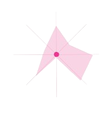
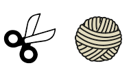

| PROFILE •1995년, 만 29세, ENFJ 매듭 공예를 사랑하는 사람 3년 경력 공방 운영자 내 작품으로 클래스를 진행하고 있다. |
HOBBY 매듭 공예 식물 키우기 음악 듣기 및 소설 읽기 수사 프로그램 보기 |
| MBTI

|
MOTIVATION
 |
| WANT TO STUDY
wjdtngus7136@naver.com |
PRECIOUS THINGS
|